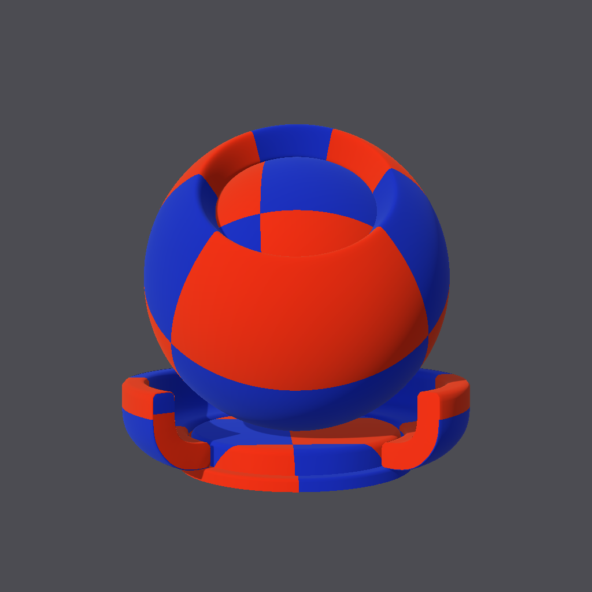

Introduction
This package supports the bi-directional translation between MaterialX material graphs and the glTF Procedural Textures extension.
- The Khronos extensions can be found here:
- The MaterialX specification documents can be found here
Dependencies
- The 1.39 release (or patch releases) of MaterialX available on PyPi is required.
- The
jsonschema package if Schema validation is desired
Setup
The Github repository can be forked / cloned locally and the package built using pip as follows from the root folder:
pip install .
All dependencies listed will be installed if required.
Command Line Interfaces
To convert from a MaterialX document to produce a glTF JSON document the materialx_to_gltf.py utility script may be used.
The following is an example converting a sample file found in the test folder. The results are saved to a file called checkerboard_graph.gltf.
python source/gltf_materialx_converter/materialx_to_gltf.py "tests/data/checkerboard_graph.mtlx"
Documentation
API
API documentation can be found here
Documentation can be generated by running doxygen from the "documents" folder.
Tests
The following command can be used to run tests from the root folder:
python -m unittest discover -s tests -p "test_*.py"
Supported MaterialX Configurations
Only specific configurations of MaterialX can be mapped to glTF Texture Procedurals.
- There must be a
surfacematerial material node
- There must be a
glTF PBR node connected to the surface shader input of the material.
- A single
nodegraph with a color3 output node which is connected to the base color on the surface shader. The constant node can be replaced with the desired set of nodes, and one or more inputs may be specified to route data into the nodegraph.
Below is a diagram the minimal graph and it's corresponding MaterialX XML document from the test data area. There are no inputs specified on the nodegraph.
graph LR
gltf_Material([surfacematerial:material])
style gltf_Material fill:#090, color:#FFF
gltf_Shader[gltf_pbr:surfaceshader]
subgraph gltf_procedural
gltf_procedural_output_color4([output:color3])
style gltf_procedural_output_color4 fill:#09D, color:#FFF
gltf_procedural_constant_color4([constant:color3:1,1,1])
style gltf_procedural_constant_color4 fill:#888, color:#000
end
gltf_Shader --"surfaceshader"--> gltf_Material
gltf_procedural_constant_color4 --> gltf_procedural_output_color4
gltf_procedural_output_color4 --"base_color"--> gltf_Shader
Minimal MTLX Configuration File
Sample Data
The following is a set of example files used for unit testing. The term "Compound nodes" refers to nodes which are implemented as node graphs themselves ("functional graphs" in MaterialX terminology)
For each MaterialX file the resulting glTF file is given, along with a diagram of how the graph looks and reference image rendered using the MaterialXView sample application which is available as part of the core MaterialX distribution.
Examples
| Description | Documents | Reference Image
|
The following is a simple graph which adds two colors together.
- Graph count: single
- Graph inputs: multiple
- Graph outputs: single
- Stream inputs: no
- Compound nodes: none
- Downstream shader: glTF PBR
graph TB
subgraph graph1
graph1_myin1([input:1,0,0])
style graph1_myin1 fill:#09D, color:#FFF
graph1_myin2([input:0.94902, 0.768627, 0.109804])
style graph1_myin2 fill:#09D, color:#FFF
graph1_output_color4([output])
style graph1_output_color4 fill:#09D, color:#FFF
graph1_add_color4[add]
end
Default([surfacematerial])
style Default fill:#090, color:#FFF
gltf_mat[gltf_pbr]
graph1_myin2 --"in1"--> graph1_add_color4
graph1_myin1 --"in2"--> graph1_add_color4
graph1_add_color4 --> graph1_output_color4
gltf_mat --"surfaceshader"--> Default
graph1_output_color4 --"base_color"--> gltf_mat
| MTLX GLTF |
|
|
The following is a pattern graph that produces a checkerboard pattern. The two input colors, and a texture coordinate tiling option are exposed on the node graph. The output is a color which is routed to a downstream glTF PBR shading node (glTF material).
- Graph count: single
- Graph inputs: multiple
- Graph outputs: single
- Stream inputs: yes
- Compound nodes: none
- Downstream shader: glTF PBR
graph TB
subgraph NG_main
NG_main_uvtiling([input:vector2:8,8])
style NG_main_uvtiling fill:#09D, color:#FFF
NG_main_color1([input:color3:1,0.094118,0.031373])
style NG_main_color1 fill:#09D, color:#FFF
NG_main_color2([input:color3:0.035294,0.090196,0.878431])
style NG_main_color2 fill:#09D, color:#FFF
NG_main_output_N_mtlxmix_out([output:color3])
style NG_main_output_N_mtlxmix_out fill:#09D, color:#FFF
NG_main_N_mtlxmix[mix:color3]
NG_main_N_mtlxdotproduct[dotproduct:float]
NG_main_N_mtlxmult[multiply:vector2]
NG_main_N_mtlxsubtract[subtract:vector2]
NG_main_N_mtlxfloor[floor:vector2]
NG_main_N_modulo[modulo:float]
NG_main_Texcoord[texcoord:vector2:0]
end
Gltf_pbr[gltf_pbr:surfaceshader]
MAT_Gltf_pbr([surfacematerial:material])
style MAT_Gltf_pbr fill:#090, color:#FFF
NG_main_N_mtlxmix --> NG_main_output_N_mtlxmix_out
NG_main_color1 --"fg"--> NG_main_N_mtlxmix
NG_main_color2 --"bg"--> NG_main_N_mtlxmix
NG_main_N_modulo --"mix"--> NG_main_N_mtlxmix
NG_main_N_mtlxfloor --"in1"--> NG_main_N_mtlxdotproduct
NG_main_Texcoord --"in1"--> NG_main_N_mtlxmult
NG_main_uvtiling --"in2"--> NG_main_N_mtlxmult
NG_main_N_mtlxmult --"in1"--> NG_main_N_mtlxsubtract
NG_main_N_mtlxsubtract --"in"--> NG_main_N_mtlxfloor
NG_main_N_mtlxdotproduct --"in1"--> NG_main_N_modulo
NG_main_output_N_mtlxmix_out --"base_color"--> Gltf_pbr
Gltf_pbr --"surfaceshader"--> MAT_Gltf_pbr
| MTLX GLTF | 
|
Pattern graph using a file texture
- Graph count: single
- Graph inputs: none
- Graph outputs: single
- Stream inputs: yes
- File inputs: single. Non-default filtering.
- Compound nodes: yes. UV placement.
- Downstream shader: gltf PBR
graph TB
subgraph nodegraph1
nodegraph1_output_color3([output_color3:color3])
style nodegraph1_output_color3 fill:#09D, color:#FFF
nodegraph1_image_color3[image_color3:color3]
nodegraph1_place2d_vector2[place2d_vector2:vector2]
nodegraph1_texcoord_vector2[texcoord_vector2:vector2:1]
end
gltf_pbr_surfaceshader[gltf_pbr_surfaceshader:surfaceshader]
surfacematerial([surfacematerial:material])
style surfacematerial fill:#090, color:#FFF
nodegraph1_image_color3 --> nodegraph1_output_color3
nodegraph1_place2d_vector2 --"texcoord"--> nodegraph1_image_color3
nodegraph1_texcoord_vector2 --"texcoord"--> nodegraph1_place2d_vector2
nodegraph1_output_color3 --"base_color"--> gltf_pbr_surfaceshader
gltf_pbr_surfaceshader --"surfaceshader"--> surfacematerial
| MTLX GLTF |
|
Pattern graph using using multiple file textures with different texture placements and a shared input stream.
- Graph count: single
- Graph inputs: none
- Graph outputs: single
- Stream inputs: yes
- File inputs: multiple
- Compound nodes: yes.
- Downstream shader: gltf PBR
graph TB
gltf_pbr_surfaceshader[gltf_pbr:surfaceshader]
surfacematerial([surfacematerial:material])
style surfacematerial fill:#090, color:#FFF
subgraph nodegraph1
nodegraph1_output_color3([output:color3])
style nodegraph1_output_color3 fill:#09D, color:#FFF
nodegraph1_texcoord_vector2[texcoord:vector2:0]
nodegraph1_place2d_vector3[place2d:vector2]
nodegraph1_multiply_color4[multiply:color3]
nodegraph1_image_color4[image:color3]
nodegraph1_image_color3[image:color3]
nodegraph1_place2d_vector2[place2d:vector2]
end
nodegraph1_output_color3 --"base_color"--> gltf_pbr_surfaceshader
gltf_pbr_surfaceshader --"surfaceshader"--> surfacematerial
nodegraph1_multiply_color4 --> nodegraph1_output_color3
nodegraph1_texcoord_vector2 --"texcoord"--> nodegraph1_place2d_vector3
nodegraph1_image_color3 --"in1"--> nodegraph1_multiply_color4
nodegraph1_image_color4 --"in2"--> nodegraph1_multiply_color4
nodegraph1_place2d_vector3 --"texcoord"--> nodegraph1_image_color4
nodegraph1_place2d_vector2 --"texcoord"--> nodegraph1_image_color3
nodegraph1_texcoord_vector2 --"texcoord"--> nodegraph1_place2d_vector2
| MTLX GLTF |
|
Pattern graph using using multiple file textures routed to different outputs. Each output is connected to a different downstream shader.
- Graph count: single
- Graph inputs: none
- Graph outputs: single
- Stream inputs: yes
- File inputs: yes.
- Compound nodes: yes.
- Downstream shader: gltf PBR
graph TB
gltf_pbr_surfaceshader[gltf_pbr:surfaceshader]
surfacematerial([surfacematerial:material])
style surfacematerial fill:#090, color:#FFF
surfacematerial1([surfacematerial:material])
style surfacematerial1 fill:#090, color:#FFF
gltf_pbr_surfaceshader1[gltf_pbr:surfaceshader]
subgraph nodegraph1
nodegraph1_output_color4([output:color3])
style nodegraph1_output_color4 fill:#09D, color:#FFF
nodegraph1_output_color3([output:color3])
style nodegraph1_output_color3 fill:#09D, color:#FFF
nodegraph1_texcoord_vector2[texcoord:vector2:0]
nodegraph1_place2d_vector3[place2d:vector2]
nodegraph1_place2d_vector2[place2d:vector2]
nodegraph1_image_color4[image:color3]
nodegraph1_image_color3[image:color3]
end
nodegraph1_output_color3 --"base_color"--> gltf_pbr_surfaceshader
gltf_pbr_surfaceshader --"surfaceshader"--> surfacematerial
gltf_pbr_surfaceshader1 --"surfaceshader"--> surfacematerial1
nodegraph1_output_color4 --"base_color"--> gltf_pbr_surfaceshader1
nodegraph1_texcoord_vector2 --"texcoord"--> nodegraph1_place2d_vector3
nodegraph1_texcoord_vector2 --"texcoord"--> nodegraph1_place2d_vector2
nodegraph1_place2d_vector3 --"texcoord"--> nodegraph1_image_color4
nodegraph1_image_color4 --> nodegraph1_output_color4
nodegraph1_image_color3 --> nodegraph1_output_color3
nodegraph1_place2d_vector2 --"texcoord"--> nodegraph1_image_color3
| MTLX GLTF |
|